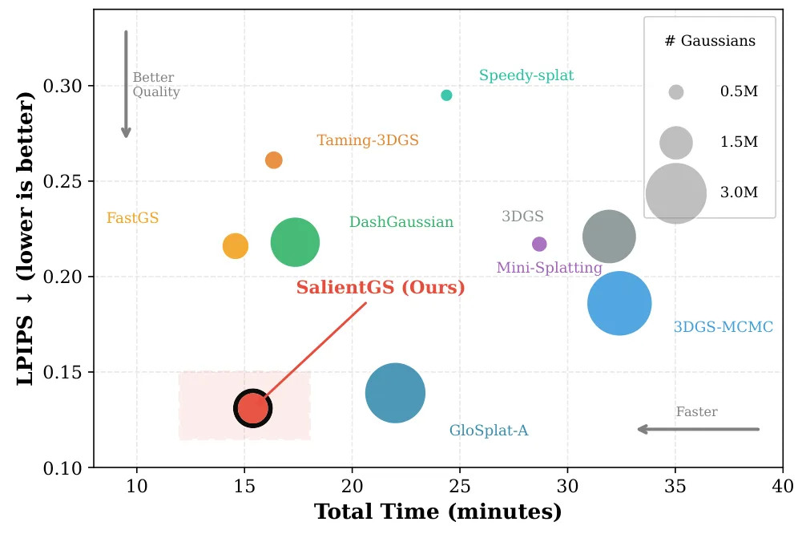

新论文 · 日期 2026-07-13 · score 18 · cs.RO
作者：Ruilan Gao, Letian Jin, Yu Zhang
评分 9.6/10
单目 SLAM3DGS几何先验回环检测位姿图优化
一句话工作总结：以学习几何先验初始化未标定单目输入，再用光度—几何联合优化、回环和位姿图维护实时 3DGS 地图。
GeoGS-SLAM 是一套将 3DGS 地图表示与学习式几何先验结合的在线单目稠密重建系统。面对未标定 RGB 输入，系统先通过前馈视觉几何模型预测相机和场景先验，再从 RGB 与几何先验直接采样 Gaussian primitive 扩展地图，并以 coarse-to-fine 策略联合优化相机位姿和场景地图，同时最小化光度与几何损失。为保证全局一致性，系统还加入在线回环检测和位姿图优化。作者称其在室内外 be…
SLAM methods based on 3D Gaussian Splatting (3DGS) have demonstrated impressive tracking and mapping performance, but typically require additional geometric information from external depth sensors. Meanwhile,…

新论文 · 日期 2026-07-13 · score 15 · cs.CV
作者：Tianyu Xiong, Rui Li, Suning Ge, Jiaqi Yang
评分 9.2/10
SfM3DGSMCMCGaussian 分配端到端重建
一句话工作总结：用多视图残差判断 Gaussian 的欠拟合与冗余，通过重要性采样动态分配容量，打通 SfM 到 3DGS。
SalientGS 面向无序图像重建中昂贵的 SfM 预处理与冻结位姿接口，提出统一的 SfM-to-3DGS 管线。其核心是重要性引导的 MCMC Gaussian 分配：将多视图残差聚合为每个 Gaussian 的欠拟合和冗余信号，构造平滑的重要性加权采样分布，使 Gaussian 的出生与重定位偏向欠拟合区域，并从拟合充分区域回收容量，而不改变底层 SGLD。论文报告 15 分钟端到端重建与先进感知质量，并公…
Reconstructing 3D scenes from unordered images remains bottlenecked by expensive Structure-from-Motion (SfM) preprocessing and frozen pose interfaces. We present SalientGS, a unified SfM-to-3D Gaussian Splatti…

新论文 · 日期 2026-07-13 · score 12 · cs.RO, cs.LG, cs.SE
作者：Jakob Solberg Berntzen, Safia Fatima, Leon Moonen
评分 8.2/10
视觉里程计无人地面车故障恢复CPU-onlyWebots
一句话工作总结：把单目 VO 作为循线机器人故障后的回退面包屑，在 CPU-only 20 Hz 控制环中实现两阶段自恢复。
本文为低成本循线无人地面车设计无需 LiDAR、GPS 或 GPU 的两阶段恢复机制。引导线丢失后，第一阶段让机器人原地旋转并逐步放宽颜色检查，通过多帧确认重新发现线路；若仍失败，第二阶段借助单目视觉里程计返回已保存的面包屑位置后重试。系统结合深度门控 HSV 循线、YOLOv8n 障碍检测和 VO 面包屑地图，在 CPU 上以 20 Hz 运行。119 个 Webots 故障注入 episode 中成功率为 86…
Low-cost unmanned ground vehicles are often used in indoor places like warehouses, inspection corridors, and farm rows, where painted floor lines guide the robot. Line following is useful because it only needs…

新论文 · 日期 2026-07-13 · score 12 · cs.RO, cs.CV
作者：Ting-Wei Ou, Huang-Ting Lin, Kuu-Young Young
评分 9/10
视觉 SLAM数据关联特征描述子注意力实时前端
一句话工作总结：不改变描述子维度和匹配 API，以全局注意力与几何序列建模低侵入增强成熟 V-SLAM 的数据关联。
Desc++ 是可嵌入现有视觉 SLAM 的轻量描述子增强模块。它联合编码描述子表示与关键点几何，并通过无序全局注意力和几何感知的线性时间序列建模聚合空间上下文。增强后的描述子保持原始维度和匹配接口，因此无需替换成熟系统的特征提取—匹配管线。作者在描述子匹配、对应关系分析和四套 V-SLAM 系统级 benchmark 上验证了匹配准确率、轨迹精度与稳定性提升，并报告较好的精度—效率平衡。
Reliable visual data association is fundamental to visual SLAM (V-SLAM), as it directly determines the quality of the camera pose estimation and map consistency. However, the handcrafted descriptors used by mo…

新论文 · 日期 2026-07-13 · score 9 · cs.CV
作者：Yingji Zhong, Dave Zhenyu Chen, Fuzhao Ou, Youyu Chen
评分 8/10
3DGS长序列前馈重建新视角合成高效建模
一句话工作总结：以重几何粗 token、轻外观细 token 的非对称双分支减少长序列 3DGS 前馈重建冗余。
AsySplat 针对可泛化 3DGS 长序列建模中的冗余计算，将几何和外观解耦为非对称分支。几何分支使用粗粒度 token 和大部分参数完成多视图重建，外观分支则以少量参数处理细粒度 token 捕获细节，两者通过双向连接相互引导。作者认为高质量新视角合成并不总需要同等精细的几何，因此按任务难度分配计算。在 32 视图、960P 输入上，模型声称达到优化式方法质量并获得近 800 倍加速，同时以更少参数超过既有可…
Recent generalizable 3D Gaussian Splatting models have advanced long-sequence novel view synthesis (NVS), but at the cost of substantial redundant computation. We identify that the redundancy can be mitigated…

新论文 · 日期 2026-07-13 · score 6 · cs.CV
作者：Fatimah Zohra, Chen Zhao, Shuming Liu, Yahya Al Malallah
评分 7.1/10
Gaussian 视频前馈表示Transformer视频编码几何正则
一句话工作总结：一次前馈生成逐帧二维 Gaussian 视频表示，并用自适应秩正则抑制针状退化。
HyperGS 用前馈、无逐视频优化的方法，从任意视频一次预测 Gaussian 表示。系统以因子化时空 Transformer 提取视频 token，再用可学习 query Transformer 为每帧生成 8 参数二维 Gaussian。针对跨视频训练时出现的针状退化，作者引入强度动态调整的 rank-based 几何正则。论文报告在匹配重建质量下将编解码速度提高 10^4 至 10^5 倍，并可零样本泛化至…
Gaussian Splatting has emerged as an effective representation for video, but existing methods rely on per-video optimization. This leads to slow encoding and limits generalization across videos. To amortize th…
新论文 · 日期 2026-07-13 · score 4 · cs.CV
作者：Mingchao Sun, Luyang Tang, Yu Liu, Xu Yan
评分 6.8/10
世界模型3DGS全景重建空间点云多模态生成
一句话工作总结：以全景图和点云组成统一空间原语，经轨迹生成与全景视频重建输出可探索的 3DGS 世界。
ABot-3DWorld 0 将文本、图像和视频转换为可探索的三维世界。核心 Spatial Generative Primitive 由高质量全景图与空间点云组成：多模态输入先提升为该原语，具有三维一致性的全景视频生成器沿规划轨迹进行探索，最后由全景视频重建引擎生成 3DGS 世界。富多视图或视频输入走强调几何恢复的路径，单图或文本输入则通过生成补全形成创意世界；系统还把生成世界锚定到地理兴趣点。
We present ABot-3DWorld 0, a universal multimodal 3D world model that turns text, image, and video inputs into high-fidelity, explorable 3D worlds. At the heart of our framework is a unified Spatial Generative…
新论文 · 日期 2026-07-13 · score 4 · cs.CV
作者：Langxu Zhao, Zuan Gu, Tianhan Gao
评分 6.6/10
透明物体三维重建深度估计表面法向几何预处理
一句话工作总结：融合透明掩码、物理属性与法向先验，把玻璃等透明区域转成便于现有深度/重建模型处理的不透明纹理。
GHOST 是面向透明物体深度估计与三维重建的几何引导预处理框架，无需重训下游模型。管线先由 TransDINO 和 TransDecomp 分离透明掩码与透明物理属性，再由 DAF-Net 恢复表面法向先验编码曲率，最后由 GeoSemTransNet 融合多模态线索，合成保留三维结构且纹理丰富的不透明 RGB 图像。作者称该方法通过恢复关键光度线索，提高了先进深度估计和重建模型处理透明物体时的准确率。
Transparent objects pose a fundamental challenge for depth estimation and 3D reconstruction due to their violation of Lambertian assumptions, leading to severe geometry degradation in downstream tasks. To addr…